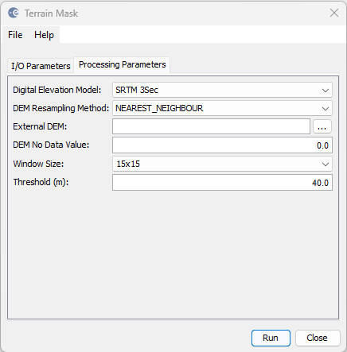

| Terrain Mask | |
The Terrain Mask operator uses a DEM to determine large slopes in elevation over a window. This is useful for feature extraction on plateaus by masking out mountainous areas.
The following parameters are used by the operator:
If the slope between the min and max elevations within a window exceeds the threshold then the operator will mask out the pixel.
